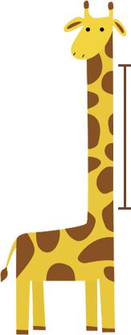
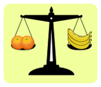
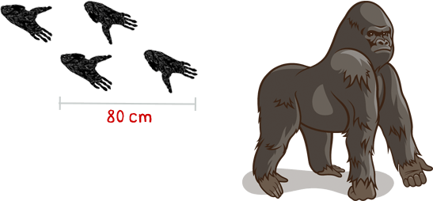
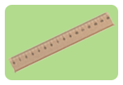
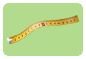
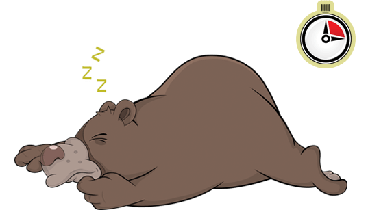

Olá, crianças!
Sejam bem-vindas ao zoológico das unidades de medida! Aqui vocês percorrerão caminhos que os levarão a diversas atrações. Em cada uma delas, há um desafio e muitas informações. Boa diversão!
Parabéns!
Você completou o passeio e conheceu todo o zoológico.
Qual o tamanho do pescoço dessa girafa?
130 cm
50 cm
130 cm
80 cm
10 cm
Sobre o pescoço das girafas.
As girafas são animais muito altos. Na fase adulta, podem medir até 6 metros de altura. As pernas e o pescoço, que pode chegar a 2 metros de altura, são duas partes da girafa que contribuem bastante para que ela alcance esse tamanho.
Observando as frutas em equilíbrio nas balanças, responda: Como poderemos equilibrar a alimentação dos elefantes usando esses três tipos de frutas?

- 

Sobre a alimentação dos elefantes.
Os elefantes são os maiores animais terrestres. Na fase adulta, são capazes de ingerir 100 kg de alimentos em um só dia. Apesar de seu tamanho e peso, eles têm uma dieta rica em alimentos pequenos, por exemplo, frutas.
Utilizando um recipiente com capacidade de 30 litros e outro com capacidade de 10 litros, coloque 20 litros de água para o camelo.
Sobre a capacidade dos camelos de ficar dias sem beber água.
O camelo é um animal que pode passar dias sem ingerir água ou muita comida. Ele é capaz de ficar sem comer muito porque as duas corcovas nas costas acumulam energia na forma de gordura. Ele fica sem ingerir água por dias porque, quando pode, bebe dezenas de litros de uma só vez.
Observe as pegadas deixadas pelo gorila. Qual o instrumento de medição mais adequado para medir a distância entre elas?
- 
- 
Sobre os gorilas.
O gorila é um dos maiores primatas existentes. De braços abertos, sua envergadura ultrapassa a própria altura e aproxima-se de três metros. Ele se locomove em quatro patas e usa os braços como apoio, apesar de ser capaz de ficar de pé em duas patas. Por apoiar o peso do corpo nos braços ao caminhar, dependendo do solo, o gorila deixa
pegadas nítidas.
Observe a quantidade de carne que cada animal come por dia. Juntos, o tigre adulto e o filhote comem de carne por dia.
- 3 kg
500 g - 2 kg
- 4 kg
- 2 kg
500 g
Sobre os tigres.
Os tigres são felinos, carnívoros e podem ter listras. Os animais carnívoros alimentam-se de carne. Os tigres obtêm carne por meio da caça e, para isso, as listras os ajudam bastante, pois elas fazem com que os tigres aproximem-se da presa sem serem notados, ou seja, elas
os camuflam.
De acordo com o texto ao lado, quantas horas os ursos costumam dormir diariamente quando não estão hibernando?
8 horas - 10
horas - 12
horas - 8
horas - 16
horas
Sobre a hibernação dos ursos.
Os ursos habitam regiões de tão baixas temperaturas durante o inverno que, às vezes, os rios congelam. O congelamento dos rios provoca escassez de alimentos para os ursos.
A solução adotada por eles é hibernar em locais protegidos até mudar a estação. Na hibernação, os ursos dormem o dia todo, muito diferente dos 480 minutos diários de sono a que estão acostumados. Dormindo, os ursos gastam menos energia, e tiram de sua própria gordura a pouca energia e água de que precisam para hibernar.
Em um dia, as andorinhas percorrem
quilômetros.
- 300 km
- 600 km
- 900 km
- 330 km
Sobre as andorinhas.
As andorinhas são aves com tamanho próximo ao de uma régua de 15 centímetros. Apesar do pequeno tamanho, elas são aves migratórias, ou seja, voam de um hemisfério a outro do globo terrestre em determinadas épocas para fugir da estação mais fria do ano, o inverno.
Observe nos relógios a hora de entrada e saída do zoológico.
Quanto tempo durou o passeio?
- 1 hora
- 3 horas
- 5 horas
- 10 horas